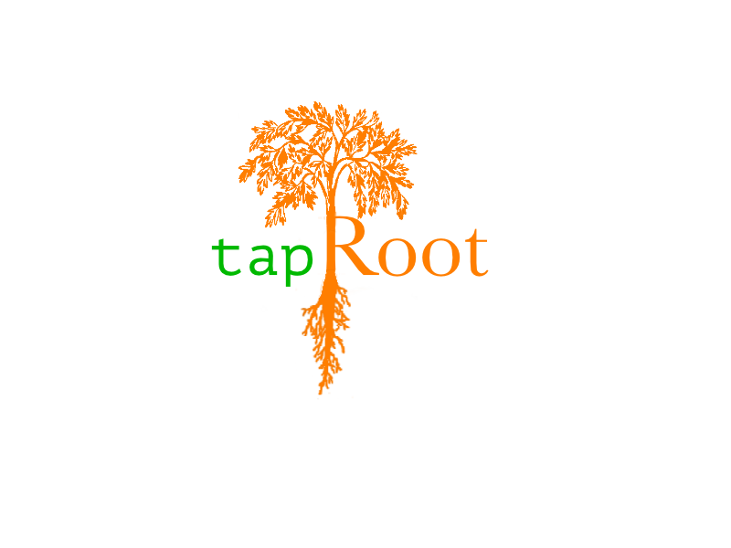
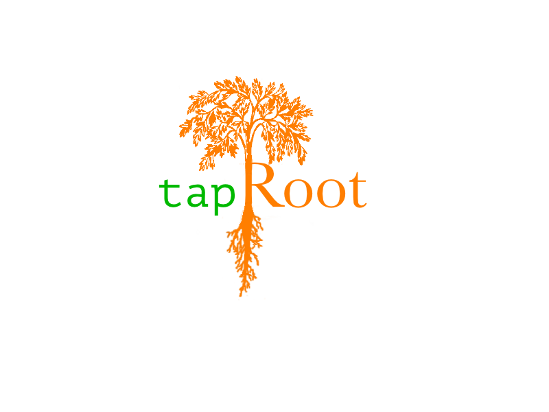

Hello,
My name is Ian. I'm a teacher looking to pursue my passion for programming at the professional level. tapRoot Coding is a name that embodies my love of both coding and nature, a business name that I have contracted under, my social media pseudonym, and, most relevantly to this resume website, a domain name that I already owned. Below, you can find a portfolio of work I've done, and my official resume.
Contact me at kuzmik951@gmail.com
Portfolio
A selection of some of my programming work, everything from Web Development to Forex Trading to Tutorials for Kids. More small projects can be found on my GitHub Profile, and there are a few more links in my Resume as well.

Xochis Apothecary
This WordPress site features a 100% custom theme, and utilizes BootStrap and jQeury. No longer in use, but I've saved a preview.

tapRoot Coding
Yes, this very website! I tried to be as simple and lightweight as possible while still delivering a dynamic UX. All code used for this site, minus Fontello font icons, is entirely my own.

tapRoot-Toolbox
A small WordPress plugin to add HTTP headers for better security on client websites.
MQL4 Programs
Indicators and Trading Bots written in MQL4 for my Youtube Tutorial series on MetaTrader4.
Pine Script Trading Bots
Three trading robots written in Pine Script for the TradingView platform. These were my first profitable scripts, geared towards the Crypto market.
Scratch Blogs
Scratch is an educational, block-based programming languge developed by MIT. In addition to teaching, I also write blog articles/tutorials for my company. here is a selection.
Resume
I've put together a compact, quick-read resume for convenience, as well as a full resume with more explanations (attached below). In the interest of privacy, references are only sent with an application, and not posted here.
Experience
-
Coding Instructor — September 2020 - Present
Create & Learn - Remote
I teach mostly K-6 kids block-based languages (Scratch/Thunkable/Micro:Bit) as well as basic HTML, CSS, and JavaScript. I also contribute to the company's blog, primarily tutorials for games in Scratch (see portfolio).
-
Algorithmic Trading — March 2021 - Present
tapRoot Coding - My Passion Project
Developing algorithms in Pine Script (similar to Python) and MQL4 (similar to C++) for the purpose of automated trading in the Forex and Crypto markets. Examples in portfolio.
-
WordPress Websites
RambleBerry WildCraft - Side Hustle: Ongoing
This website for my wife's business has been through many iterations, including a completely custom WordPress theme with Instagram and Google Maps integration (preview in portfolio). Currently utilizing WooCommerce with a third party theme for ease of maintenance.
Red Lodge Senior Center - Red Lodge, MT: March 2020 - July 2021
Built with Elementor for the local Senior Center. I also dealt with hosting issues before training a board member on troubleshooting and site maintenance/updates.
-
ESL Teacher — November 2019 - September 2020
VIPKid - Remote
Private English classes for Chinese students, Pre-K through 8th grade. Grammatical/Phonetic knowledge of the English language aside, this job required a lot of 'screen presence,' patience, and improvisation for the younger kids.
-
Farmers Market Vendor — January 2017 - September 2021
RambleBerry WildCraft - Red Lodge, MT
Face-to-face sales as well as product development (mostly labeling and graphics), inventory management, and wild-foraging for raw ingredients.
-
Property Management — August 2019 - March 2020
W Ranch - Luther, MT
Maintenance of a private vacation ranch. Duties included: light construction, landscaping, animal care, and general handiwork.
-
Service Industry — Fall 2015 - Spring 2019
I worked at a number of different restaurants during my time in New Orleans and Red Lodge, MT, from pizza to fine dining. Roles included: Acting Head Chef - Kitchen Manager - Cook - Server - Baker - Prep - Dishwasher
-
Ranch Hand — August 2015 - October 2015
Rancho Cabron - Baja California, Mexico
Standard farm work on a goat dairy. Duties included feeding/milking/shepherding goats, cheesemaking, gardening, and ranch maintenance (including the water system; very important in the desert!)
Information
Contact/Social
Languages
- HTML/CSS/JavaScript/PHP
- Sass
- Pine Script
- MQL4
- Python
Libraries
- jQuery
- Bootstrap
- React
Software
- Github
- Affinity Photo
- WordPress
- npm
- MAMP
- Scratch
- Thunkable
Education
- TEFL Certification (2019)
- Tulane University: BA - English (2015)